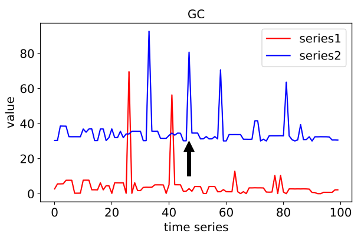
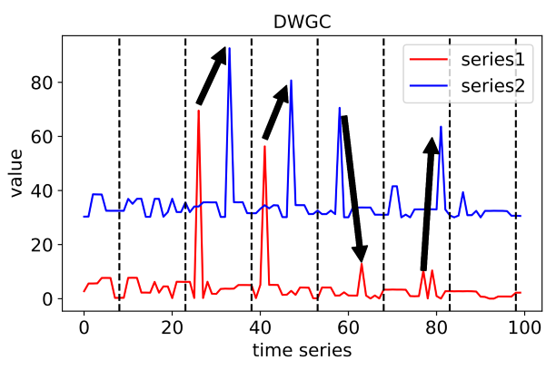

Granger causality¶
Problem Description of Granger causality¶
Granger causality Detection’s task is to find out the Granger causality lies in multi-channel time series on window level or channel level, like this:


To formalize, give a time series with multi channels:
We aim to find the Granger causality lies in channel level:
We also try to pinpoint causality from the channel level to the point-to-point level:
where 2 time points are in the same window index.
Models of Granger causality¶
Abbr |
Algorithm |
level |
supervise |
Year |
Class |
Ref |
GC |
Granger causality |
channel level |
unsupervised |
1969 |
||
DWGC |
Dynamic window-level Granger causality |
window level |
unsupervised |
2020(original) |
References
- GC
Clive WJ Granger. Investigating causal relations by econometric models and cross-spectral methods. Econometrica: journal of the Econometric Society, pages 424–438, 1969.
- DWGC
Dynamic Window-level Granger Causality of Multi-channel Time Series. Zhiheng Zhang, Wenbo Hu, Tian Tian, Jun Zhu. arXiv:2006.07788. 2020.